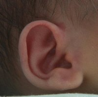

You will use it dozens of times in the coming years. Choose wisely.
If I had a quarter for every infant thermometer I've purchased, I could pay cash for our health insurance.
But what's a mom to do? Learning how to get an accurate temperature is an essential parenting skill. When you call your doctor for an ill child appointment, usually the first thing
the nurse asks is "What's her temperature?"
Being able to answer that question is a major mom-confidence booster. Stumbling around, hemming and hawing because all you have is a range of temperatures taken from a range of baby thermometers...
well, it's awkward. (Yes, I'm speaking from experience here.)
So writing this article was somewhat selfish. I wanted to get down and dirty into the world of baby thermometers. Pull out the medical research...poll some moms...and see which methods and
tools came out shining.
There are two infant thermometer designs available for us to choose from: digital with lights and beeps, and good 'ole fashioned glass mercury.
I'm supposed to tell you to go "dispose of
your glass thermometers correctly" (because of the mercury), but I really can't. I still have my glass mercury thermometer. It's my backup plan, safely tucked away in the medicine cabinet.
I like having one that is not digital, so I can check accuracies and have a spare in case of a battery crisis in the house. They are 100% accurate, albiet harder to read, and are principally
used as either an oral thermometer for adults and older children, or as a rectal infant thermometer. (Just wash them really, really, REALLY well...)
In the world of digital baby thermometers, you have five methods to choose from:
The Artery Method (forehead and behind-the-ear baby thermometers)
Regardless of where you take the temperature and what infant thermometer you use, don't take your baby's temperature right after a bath, since that could effect the reading. Wait at least 20 minutes after a bath.
It is normal for a human's temperature to naturally rise (a little) in the late afternoon and early evening, only to fall again between midnight and early morning. It may be helpful to keep
that in mind while you're taking your baby's temperature.
Sidenote: These methods aren't going to be as helpful unless you know how to read the temperatures they give you. Find out what numbers constitute a fever.
That said, lets dive into the different methods, starting with the most effective and ending with the least.
The Artery Method Forehead and Behind the Ear Temperature Scanners
Exergen Temporal Scanner Infrared ThermometerI'm an ER nurse and we use Exergen's temporal artery thermometers in our ER. They are much more accurate than underarm or in the ear, although the gold standard is a rectal temperature, which can be upsetting to children.
~ Sylvia Z.
A study published in Medical News Today shared the results of a six-month study determining the most
accurate tool to take someone's temperature.
They discovered that the most accurate method of taking someone's temperature was a combination of the forehead swipe and behind-the-ear methods.
Both of these methods use technology to measure the heat in certain blood vessels.
The forehead swipe method measures the temperature of blood rushing in the temporal artery, and the
behind-the-ear method measures the temperature of blood flowing directly from the heart through the carotid artery to the hypothalamus (which is the temperature-regulating gland in the body).
Either version works on newborns on up. As I was researching this, I wasn't able to find the Vicks Gentle Touch Behind Ear Thermometer (highest rated) for sale in the USA. (It is available
at amazon.co.uk). However, you can find the highest rated and most accurate forehead scanner in the US. I've linked it in the box to the right.
Temperature strips are also placed on the forehead, but they're very expensive, with a one time use, and horribly inaccurate.
I guess they could be useful in determining if an infant fever is present (and not the actual temperature), but why spend the money when your fingers can do
the job for free?
Summer Infant 5-Second Rectal ThermometerI love this thermometer! It is so much better to have a 5 second window to get a temperature rather than a baby screaming for what seams like an eternity to get a temperature. My husband also feels more comfortable using it more than the one the hospital sent home with us since this one has a short tip and he knows the baby will not get hurt. ~ Review from Emily P.
Yes, it's unpleasant. She will probably scream and possibly even poop all over you. (Rectal temperatures are a great bowel stimulator if constipation is an issue, btw.)
When you're looking for a good rectal infant thermometer, choose one that has a flexible tip and wide handle.
It shouldn't allow you to penetrate more than an inch into the rectum. (Inserting it too far could cause a dangerous perforation.)
Here's how it's done:
Clean the insertion end with a light soap and water to clean, rinsing well. Then coat the end with petroleum jelly (Vaseline) or place inside a disposable sleeve that's
made just for this purpose.
Undress your baby and get her into position. You could place her across your lap, tummy across your knees, legs dangling over your thigh. Or, you could lay her on
her back, with a diaper underneath to catch any "surprises" when you've finished. I perfer on the back, since it's easier to distract her with a book or toy.
Turn on the infant thermometer, and using your other hand, spread her cute little butt cheeks apart, exposing the anus. Gently insert the baby rectal thermometer in
about a half an inch (1.3-2.5 cm) into her rectum, until the tip disappears.
You'll need a firm grip on her bottom, cupping them with the palm and fingers of the hand that's holding the thermometer (the other should holding her feet,
preventing sudden kicks of protest).
When the infant thermometer beeps, remove it, kiss or blow on her tummy as a "good job prize", and finish dressing her. Don't forget to wash the baby thermometer with warm
soapy water or rubbing alcohol before storing!
The Oral Method The Scoop on Pacifier Thermometers
Vicks Pacifier ThermometerI received this thermometer as a shower gift and have used it several times. The first few times I tried it, I would take an internal temp and then try the pacifier thermometer and it was EXACTLY the same as the internal temp. Makes checking her temp. so much easier! ~ Remey's Mom
In order to take an oral temperature reading on your baby, you'll have to use a pacifier infant thermometer.
Regular oral thermometers have to be held still in a certain place (under the tongue) for several minutes. But your child won't be able to master that skill until he's four or five.
Enter the pacifier thermometer. Pacifier thermometers are specifically designed and recommended for infants older than 3 months but younger than 2 years.
However, for proper use they must be in the mouth for three minutes. So if your baby doesn't like binky's, you'll need to choose a different method.
Generally, the results
are a usually a little on the low side. Add .5 degrees F to the reading you get for an accurate picture.
The Tympanic Method Ear Scanning Baby Thermometers
Safety 1st Ear ThermometerI am an RN and I took it to work with me to test how the reading I got on this thermometer related to the ones we use on the floor and it seems to be very accurate. This one has surpassed all my expectations and I love it!
~ Brittany A.
These thermometers are quick, safe, and not uncomfortable (but yet, my kids still hated them...) That said, they are the trickiest infant thermometer to manuever.
If you don't insert the
ear thermometer exactly right, it will be difficult to get an accurate, consistent reading.
Take the time to practice with your own temperature until you find the sweet spot, where you consistently get around the same temperature. Tympanic baby thermometers are most accurate
on children over 1 year old, since the smaller the ear canal, the harder it is to get an accurate reading.
Red Cross Rapid Underarm Baby ThermometerThis is the thermometer we reach for first, of the three we have purchased. It is consistently a fast read, providing an accurate temperature within seconds, so you don't have to hold a squirming little one with the thermometer clamped under their arm.
~ A. McCallum
Taking her temperature under her arm (called axillary temperature) is another easy and popular method.
The danger with this technique, however, is that it is the least accurate method. And the younger the babyu, the more inaccurate the results.
An external armpit reading can be as much as 2 degrees lower than an internal rectal reading.
To use this method, undress your baby from the waist up. Cradle her in your arms or sit her next to you. Try to help her stay relaxed and occupied by either feeding her or giving her
a board book or toy to play with.
Slip the infant thermometer into her armpit, making sure the bulb is sandwiched snuggly between her arm and chest, surrounded by skin until it beeps.
Finding an accurate thermometer that is worth the money has been one of the most frustrating parts of mothering for me.
I hope my research can help you better decide which method and tool is best for your family.
When you need it most, is NOT the time to start
looking. Pick one early so you are better prepared when sicknesses come (and they will). Getting the temperature is only the first step. Now you have to decide
what to do about it.

Infant Fever Fighter Tips
You don't have to just cross your fingers and hope for the best. Fight back, with or without meds.
Surviving the Teething Stage
She's suddenly transformed from angelic cherub to screaming-monster-of-death. Welcome to the wide world of teething.
The Dreaded Ear Infection
Personally, there are few things I hate more than ear infections. First, they're sneaky. You have to know how to spot them. Once you've spotted them,
there's the issue of pain relief.
I just subscribed to the site, and I'm very happy I did. I have worked in the medical field for several years and love to have good resources for when things come up... ~ Crystal S.
What a great site and thanks for having it available! ~ Bernadette W.
I'm very excited to start receiving the newsletter. I've checked out your site a couple times and I loooovve how it's arranged, your language, and tips - it's great! ~ Emily N.
Heather, I can't express how happy I am I discovered your site! ~ Liza T.
Thank you Heather, for your wonderful newsletter. There is always something new! ~ Desiree T.
I'm a 1st time young mom, 23 and single, so I have found very very helpful...I can't seem to stop myself telling everyone I know about you, some thought you were my mom! ~ Vuyiswa N.
Your website is very helpful and I discovered a couple of great online stores. 'Cause I'm not a big reader, it is very nice that I can find the most important information through your
website. ~ Tonya G.
Thanks Heather! Your Milestone eBook is SO detailed and so correct. My son is doing all or most of the things and many are not mentioned in the usual books/sites. Great job and keep it up! ~ Anwesha C.
Thanks so much for creating such an AWESOME website. I really appreciate your sense of humor and real writing style. ~ Andrea Z.
My baby refused all bottles until you showed me the MAM bottle. Thank you so much for the recommendation. I wouldn't have known about them if not for your website. ~ Jennifer at Sweet Lilly ConfectionsThank you ladies! Talk about great motivation to keep writing...


 I just subscribed to the site, and I'm very happy I did. I have worked in the medical field for several years and love to have good resources for when things come up...
I just subscribed to the site, and I'm very happy I did. I have worked in the medical field for several years and love to have good resources for when things come up...